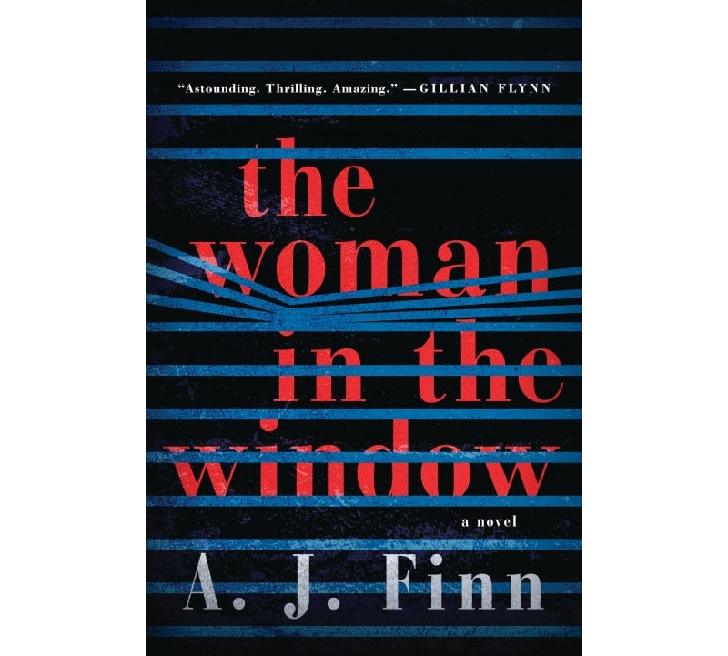
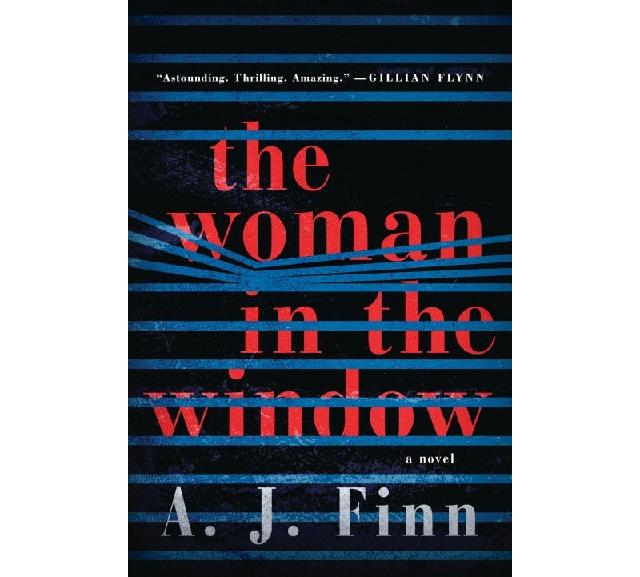

The Woman in the Window
Anna is an agoraphobe who surveys the monotonous lives of her neighbors from her window but then witnesses a violent crime. Anna’s agoraphobia isn’t the only obstacle stopping her from solving the crime-- she’s on several medications and combines those with copious amounts of wine which causes law enforcement to brush her off as delusional.
 

Law enforcement weren’t the only ones who doubted Anna; the author’s writing style in conjunction with Anna’s alcohol and drug abuse made me skeptical as well. I am not a fan of foggy memories and unreliable narrators.
The author also conveys how boring agoraphobia must be, largely by spending the first quarter of the book guiding us through Anna’s repetitive daily schedule of neighbor watching, wine drinking, and web surfing. This monotony was woven throughout the rest of the book and left me feeling very bored and with a “come on, let’s get this over with” mentality.
Anna battles her agoraphobia to try and solve the mystery of what happened to her neighbor. Her Nancy Drew escapades are a welcome relief from the otherwise boring cycle of her life (and the boring narration). When Anna has a visitor or manages to venture outside of her house, the book is much more exciting. Over the course of the book, the encounters with her neighbors became more frequent and serious in nature and I definitely wanted to hurry along to the next high point. The highest point of the book was definitely the ending but I can’t decide if the plot twist was just for the sake of plot twists.
Overall, I was disappointed by this book. After seeing A.J. Finn on his book tour and getting a signed copy, I had high expectations but I was ultimately bored and ready to move on. I know from attending the book tour that A.J. Finn put a lot of work into this book. He did ample research and consultations within the mental health community in order to accurately portray a person suffering from agoraphobia. This book wasn’t for me but I look forward to more by Finn.